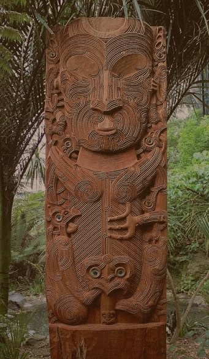
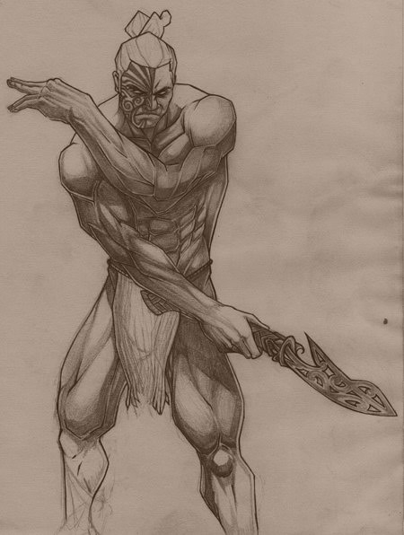
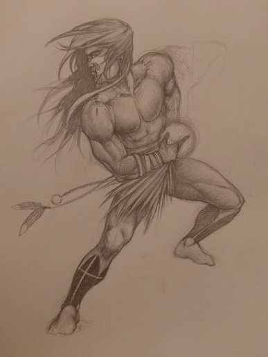
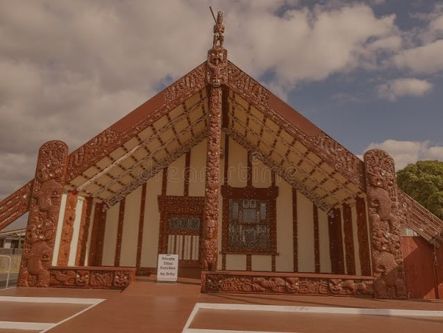

Povo Māori – Aotearoa (Nova Zelândia)
Os Māori são os indígenas polinésios da Nova Zelândia, cuja cultura é fundamentada na conexão espiritual entre todos os seres vivos através da genealogia (Whakapapa).

História E Sociedade
A organização social gira em torno do marae (terras comunais) e de subdivisões tribais conhecidas como iwi e hapu. Os Māori atuam como guardiões (kaitiaki) de sua herança cultural, tendo a obrigação ancestral de proteger a essência espiritual (mana) e a sacralidade (tapu) de suas terras e edifícios.
Religião e Cultura
A cosmogonia Māori começa com os pais primordiais: Ranginui (Pai Céu) e Papatuanuku (Mãe Terra), cujos filhos se tornaram as divindades que governam o mundo natural. Existe uma forte crença no mauri (força vital) que reside em todas as coisas.
-

Tāne
Deus das florestas e das aves; criador dos primeiros seres humanos.
-

Tangaloa
Personificação do oceano e ancestral de todos os peixes.
-

Rongo
Divindade da paz e da agricultura (plantas cultivadas).

Arquitetura
A construção mais emblemática é a Wharenui (casa de encontros), que representa o corpo de um ancestral tribal. O topo do telhado é o rosto; as vigas são os braços abertos para acolher; e a viga mestre representa a espinha dorsal. Essas casas são decoradas com entalhes em madeira, tecelagem de treliça (tukutuku) e pinturas artísticas que narram a história e a linhagem da tribo.
Curiosidades:
As orações ou encantamentos rituais, chamados de Karakia, são usados para tudo, desde atrair peixes até limpar espiritualmente uma casa após um funeral. A arte corporal, como as tatuagens faciais e corporais (moko), desempenha um papel central na identidade e no prestígio social.